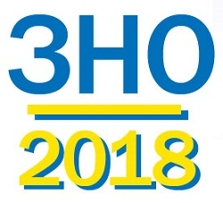

Сайт гіммназистів та їх великих досягнень
проект учнів: Владислав Вештак(редактор:відео/фото) та Артём Любченко(программіст/дизайнер)
Графік проведення пробного ЗНО-2018
Реєстрація з 09.01.2018 до 31.01.2018
24 березня- українська мова і література
31 березня - біологія, географія, історія України, математика, фізика, хімія, англійська, німецька, французька, іспанська мови.

12 грудня учні Гребінківської гімназії брали участь у написанні контрольних робіт
Малої академії наук за своїми дисциплінами. Чекаємо на результати!
Тримаємо кулачки за наших красунь)!